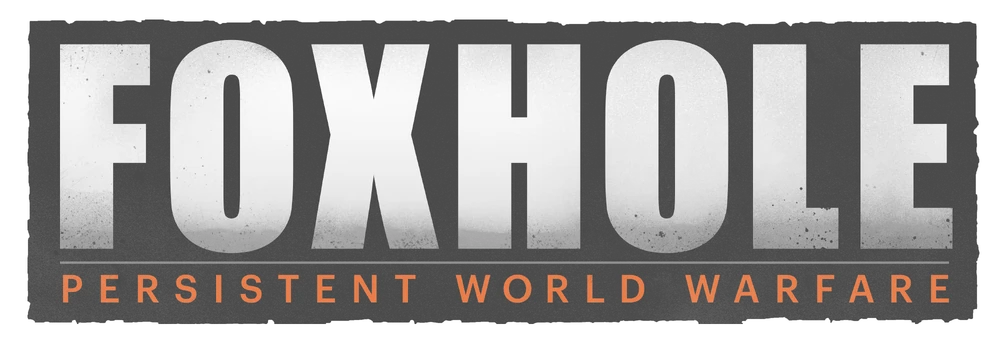
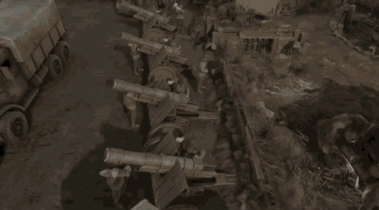
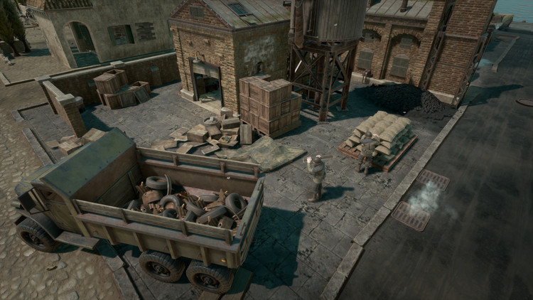
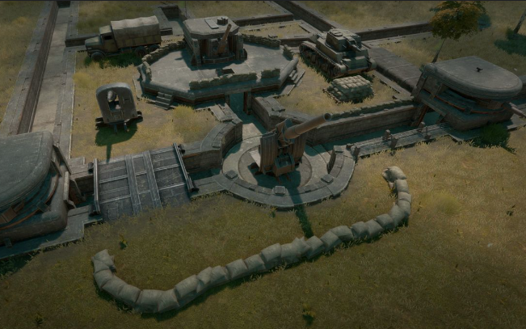

Foxhole
to masowa gra wieloosobowa, w której tysiące graczy kształtują wynik trwającej online wojny.
Każdy żołnierz to gracz, który przyczynia się do wysiłku wojennego poprzez logistykę, budowę baz, rozpoznanie, walkę i inne działania.
BITWY MMO
Tysiące graczy łączy się w tym samym świecie, walcząc w trwającej tygodniami wojnie.
Zanurz się w sandboxie, który zawiera setki tworzonych przez graczy miast,
wiosek, placówek i wielu innych ciekawych miejsc.

LOGISTYKA
Rozbudowany system logistyczny, w którym każda kula, broń, pojazd i kropla paliwa są produkowane i dostarczane przez prawdziwych graczy.
Wygrywaj bitwy, odcinając linie zaopatrzenia lub sabotując infrastrukturę na tyłach wroga.

OKOPY
Umacniaj linię frontu za pomocą linii okopów i sieci bunkrów.
Buduj podziemne bazy z magazynami amunicji, maszynowniami,
centrami wywiadu i stanowiskami artyleryjskimi.

FRAKCJE
W uniwresum Foxhole istnieją dwie frakcje: